SpringBoot启动流程
一、介绍
Spring Boot之所以能那么强大，扩展性那么好，底层还是依赖Spring，他的注解，他的处理器，他的监听器，可以有无数的扩展，这次要分析Spring Boot 2.2.6.RELEASE版本的，要搞懂Spring Boot的原理，得先从他的初始化开始，然后层层深入，各个击破。
初始化基本流程：
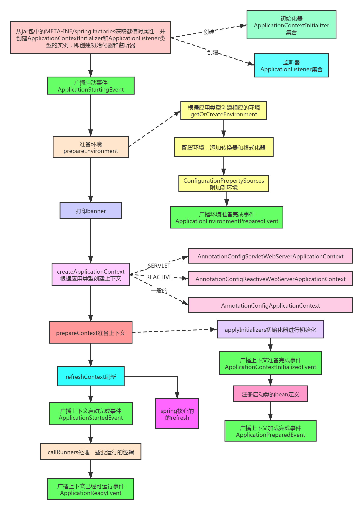
二、源码入口
SpringApplication.run
1public class Application{3 public static void main(String[] args){4 SpringApplication.run(Application.class, args);5 }6}调用重载方法
41public static ConfigurableApplicationContext run(Class<?> primarySource,2 String... args) {3 return run(new Class<?>[] { primarySource }, args);4}101public static ConfigurableApplicationContext run(Class<?>[] primarySources,2 String[] args) {3 // ---看第3步---4 return new SpringApplication(primarySources)5 // ---end---6 7 // ---看第4步---8 .run(args);9 // ---end---10}三、SpringApplication构造器
31public SpringApplication(Class<?>... primarySources) {2 this(null, primarySources);3} 首先创建一个集合存放我们传进去的类，然后推断应用程序的类型，是SERVLET，还是REACTIVE，然后获取很多jar包下的META-INF/spring.factories中的org.springframework.context.ApplicationContextInitializer属性的值和org.springframework.context.ApplicationListener属性的值，其实他们是接口，他们的值就是其实就是实现类，也就是说要获取这些接口的实现类，来做一些初始化工作，当然里面会做一些筛选，去重。然后推断出main方法的类，他用了一种很巧妙的方式，抛出一个异常，然后再方法栈里找有main方法的那个类，具体的细节后面会说。
241public SpringApplication(ResourceLoader resourceLoader, Class<?>... primarySources) {2 this.resourceLoader = resourceLoader;3 Assert.notNull(primarySources, "PrimarySources must not be null");4 this.primarySources = new LinkedHashSet<>(Arrays.asList(primarySources));5 // ---看3-1步---6 // 推断Web应用类型7 this.webApplicationType = WebApplicationType.deduceFromClasspath();8 // ---end---9 10 // ---看3-3步--- // ---看3-2步---11 // 设置初始化器 // 获取Spring工厂实例12 setInitializers((Collection) getSpringFactoriesInstances(ApplicationContextInitializer.class));13 // ---end--- // ---end---14 15 // ---看3-4步---16 // 同样也是从META-INF/spring.fatories获取到 ApplicationListener监听器17 setListeners((Collection) getSpringFactoriesInstances(ApplicationListener.class));18 /// ---end---19 20 // ---看3-5步---21 // 推断启动类22 this.mainApplicationClass = deduceMainApplicationClass();23 // ---end---24}WebApplicationType.deduceFromClasspath
推断Web应用类型，就是排他的，要么REACTIVE，要么SERVLET，要么就普通的。具体是根据Class.forName反射的，而且如果一次不行，还会进行内部类的反射，否没有的话才捕获异常，返回false。可以看到如果同时有REACTIVE和SERVLET的相关类，会判定是SERVLET。
151static WebApplicationType deduceFromClasspath() {2 // ---看3-1.1步---3 // isPresent 是否存在类型4 if (ClassUtils.isPresent(WEBFLUX_INDICATOR_CLASS, null) && !ClassUtils.isPresent(WEBMVC_INDICATOR_CLASS, null)5 // ---end--- 6 && !ClassUtils.isPresent(JERSEY_INDICATOR_CLASS, null)) {7 return WebApplicationType.REACTIVE;8 }9 for (String className : SERVLET_INDICATOR_CLASSES) {10 if (!ClassUtils.isPresent(className, null)) {11 return WebApplicationType.NONE;12 }13 }14 return WebApplicationType.SERVLET;15}isPresent
是否存在类型。
x1 public static boolean isPresent(String className, ClassLoader classLoader) {2 try {3 // 创建4 forName(className, classLoader);5 return true;6 }7 catch (IllegalAccessError err) {8 throw new IllegalStateException("Readability mismatch in inheritance hierarchy of class [" +9 className + "]: " + err.getMessage(), err);10 }11 catch (Throwable ex) {12 //没有就返回false13 // Typically ClassNotFoundException or NoClassDefFoundError...14 return false;15 }16}17
18
19// forName Class.forName了两次，一次是一般类，一次是内部类，都没有就抛异常。20public static Class<?> forName(String name, ClassLoader classLoader)21 throws ClassNotFoundException, LinkageError {22
23 ...24 ClassLoader clToUse = classLoader;25 if (clToUse == null) {26 clToUse = getDefaultClassLoader();27 }28 29 // 反射创建30 try {31 return Class.forName(name, false, clToUse);32 }33 catch (ClassNotFoundException ex) {34 int lastDotIndex = name.lastIndexOf(PACKAGE_SEPARATOR);35 if (lastDotIndex != -1) {36 String innerClassName =37 name.substring(0, lastDotIndex) + INNER_CLASS_SEPARATOR + name.substring(lastDotIndex + 1);38 try {39 return Class.forName(innerClassName, false, clToUse);40 }41 catch (ClassNotFoundException ex2) {42 // Swallow - let original exception get through43 }44 }45 throw ex;46 }47 }getSpringFactoriesInstances(ApplicationContextInitializer.class)
获取Spring工厂实例，好像是获取某个类型的集合，类型就是ApplicationContextInitializer，兴趣加载一堆名字，然后创建实例，然后排序返回，我们看看具体怎么做的：
251private <T> Collection<T> getSpringFactoriesInstances(Class<T> type) {2 return getSpringFactoriesInstances(type, new Class<?>[] {});3}4
5// 重载方法6private <T> Collection<T> getSpringFactoriesInstances(Class<T> type, Class<?>[] parameterTypes, Object... args) {7 //获取系统加载器，就是线程上下文加载器8 ClassLoader classLoader = getClassLoader();9 10 //获取type实现类的名字集合11 // ---看3-2.1步---12 // 加载相对应属性13 Set<String> names = new LinkedHashSet<>(SpringFactoriesLoader.loadFactoryNames(type, classLoader));14 // ---end---15 // ---看3-2.2步---16 // 获取到name之后执行创建17 List<T> instances = createSpringFactoriesInstances(type, parameterTypes, classLoader, args, names);18 // ---end---19 20 // ---看3-2.3步---21 // 排序22 AnnotationAwareOrderComparator.sort(instances);23 // ---end---24 return instances;25}SpringFactoriesLoader.loadFactoryNames
其实这里就是最开始说的，去加载jar包下的META-INF/spring.factories加载相应属性的值，这里就是org.springframework.context.ApplicationContextInitialize属性。
101public static List<String> loadFactoryNames(Class<?> factoryType, ClassLoader classLoader) {2 3 //获取类的全限定名，org.springframework.context.ApplicationContextInitialize4 String factoryTypeName = factoryType.getName();5 6 // ---看3-2.1.1步---7 //获取org.springframework.context.ApplicationContextInitialize的值的数组8 return loadSpringFactories(classLoader).getOrDefault(factoryTypeName, Collections.emptyList());9 // ---end---10}loadSpringFactories
先从缓存里取一个MultiValueMap，这个是一对多的映射集合，比如说一个接口，对应多个实现啦。然后获取所有依赖的jar包下的META-INF/spring.factories的url，再去加载相应的数据，然后把值用逗号分隔符分开，然后把值去空格后和键一起都放入MultiValueMap中，顺便放入缓存里。
461public static final String FACTORIES_RESOURCE_LOCATION = "META-INF/spring.factories";2
3private static Map<String, List<String>> loadSpringFactories( ClassLoader classLoader) {4 MultiValueMap<String, String> result = cache.get(classLoader);5 if (result != null) {6 return result;7 }8
9 try {10 11 //获取URL路径12 Enumeration<URL> urls = (classLoader != null ?13 14 //META-INF/spring.factories15 classLoader.getResources(FACTORIES_RESOURCE_LOCATION) :16 ClassLoader.getSystemResources(FACTORIES_RESOURCE_LOCATION));17 18 result = new LinkedMultiValueMap<>();19 20 //变量URL，获取配置属性，加到result里21 while (urls.hasMoreElements()) {22 URL url = urls.nextElement();23 UrlResource resource = new UrlResource(url);24 25 // ---看3-2.1.2步---26 // 执行加载27 Properties properties = PropertiesLoaderUtils.loadProperties(resource);28 // ---end---29 30 for (Map.Entry<?, ?> entry : properties.entrySet()) {31 String factoryTypeName = ((String) entry.getKey()).trim();32 33 //值用逗号分割负分开，都放入result中34 for (String factoryImplementationName : StringUtils.commaDelimitedListToStringArray((String) entry.getValue())) {35 result.add(factoryTypeName, factoryImplementationName.trim());36 }37 }38 }39 cache.put(classLoader, result);40 return result;41 }42 catch (IOException ex) {43 throw new IllegalArgumentException("Unable to load factories from location [" +44 FACTORIES_RESOURCE_LOCATION + "]", ex);45 }46 }PropertiesLoaderUtils.loadProperties
获取输入流，获取资源名字，处理的是xml的或者其他的类型。
171private static final String XML_FILE_EXTENSION = ".xml";2
3public static void fillProperties(Properties props, Resource resource) throws IOException {4 InputStream is = resource.getInputStream();5 try {6 String filename = resource.getFilename();7 if (filename != null && filename.endsWith(XML_FILE_EXTENSION)) {8 props.loadFromXML(is);9 }10 else {11 props.load(is);12 }13 }14 finally {15 is.close();16 }17} 从org/springframework/boot/spring-boot/2.2.6.RELEASE/spring-boot-2.2.6.RELEASE.jar!/META-INF/spring.factories里解析出这些，其实就是键值对，有些值是多个，用逗号分割的：
61# Application Context Initializers2org.springframework.context.ApplicationContextInitializer=\3org.springframework.boot.context.ConfigurationWarningsApplicationContextInitializer,\4org.springframework.boot.context.ContextIdApplicationContextInitializer,\5org.springframework.boot.context.config.DelegatingApplicationContextInitializer,\6org.springframework.boot.web.context.ServerPortInfoApplicationContextInitializer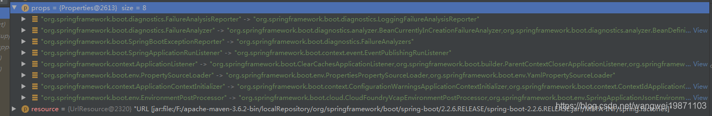
最终看到的结果
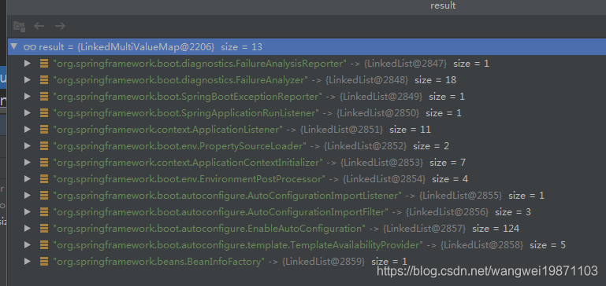
createSpringFactoriesInstances
进行反射创建实例并返回。
221private <T> List<T> createSpringFactoriesInstances(Class<T> type, Class<?>[] parameterTypes,2 ClassLoader classLoader, Object[] args, Set<String> names) {3 List<T> instances = new ArrayList<>(names.size());4 for (String name : names) {5 try {6 //进行反射实例化7 Class<?> instanceClass = ClassUtils.forName(name, classLoader);8 9 //判断instanceClass是type的类型或者子类10 Assert.isAssignable(type, instanceClass);11 Constructor<?> constructor = instanceClass.getDeclaredConstructor(parameterTypes);12 13 //实例化14 T instance = (T) BeanUtils.instantiateClass(constructor, args);15 instances.add(instance);16 }17 catch (Throwable ex) {18 throw new IllegalArgumentException("Cannot instantiate " + type + " : " + name, ex);19 }20 }21 return instances;22}sort
初始化可能有优先顺序的，所以要进行排序，如果没有实现Ordered接口的一律优先级最低的，内部是这样排序的，PriorityOrdered优先，然后是Ordered：
141private int doCompare( Object o1, Object o2, OrderSourceProvider sourceProvider) {2 boolean p1 = (o1 instanceof PriorityOrdered);3 boolean p2 = (o2 instanceof PriorityOrdered);4 if (p1 && !p2) {5 return -1;6 }7 else if (p2 && !p1) {8 return 1;9 }10
11 int i1 = getOrder(o1, sourceProvider);12 int i2 = getOrder(o2, sourceProvider);13 return Integer.compare(i1, i2);14} 其实如果你自己写的想早点初始化，就可以实现PriorityOrdered或者Ordered，返回小点的值就好啦。
排序前
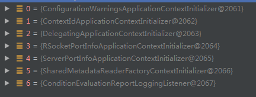
排序后
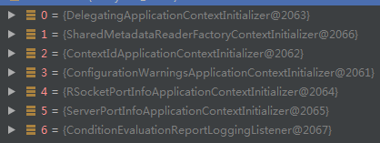
setInitializers
最后把他们放进ArrayList里，后面肯定会有用，后面再讲吧。
31public void setInitializers(Collection<? extends ApplicationContextInitializer<?>> initializers) {2 this.initializers = new ArrayList<>(initializers);3}setListeners
这个跟前面的设置初始化器类似，只是要的类型是org.springframework.context.ApplicationListener。这个监听器干嘛用，其实就是有个观察者模式，spring为了让其他可以扩展，让他们知道现在初始化到哪个阶段了，他们可以参数，于是让他们注册到spring内部，再各个阶段进行通知，这样他们就可以一起初始化了。
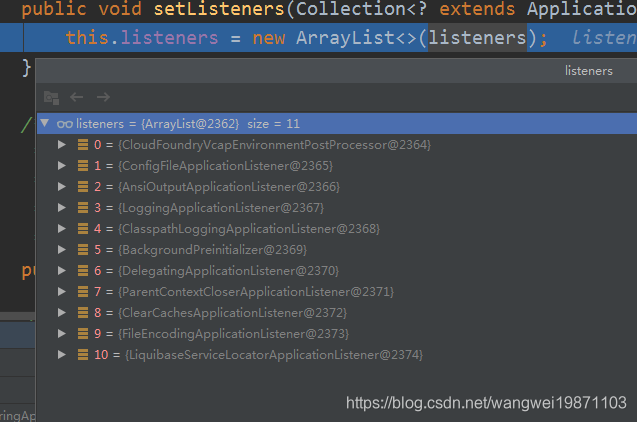
deduceMainApplicationClass
这里就是推断启动类的，直接抛出异常，然后找到main方法所在的类。
141private Class<?> deduceMainApplicationClass() {2 try {3 StackTraceElement[] stackTrace = new RuntimeException().getStackTrace();4 for (StackTraceElement stackTraceElement : stackTrace) {5 if ("main".equals(stackTraceElement.getMethodName())) {6 return Class.forName(stackTraceElement.getClassName());7 }8 }9 }10 catch (ClassNotFoundException ex) {11 // Swallow and continue12 }13 return null;14}四、run方法
其实就是给上下文做准备，会调用spring的初始化，会进行不同初始化阶段的广播，去通知监听器，监听器就可以做一些扩展的事情啦，比如初始化自己的环境什么的。
811public ConfigurableApplicationContext run(String... args) {2 //计时用3 StopWatch stopWatch = new StopWatch();4 stopWatch.start();5 ConfigurableApplicationContext context = null;6 Collection<SpringBootExceptionReporter> exceptionReporters = new ArrayList<>();7 configureHeadlessProperty();8 9 // ---看4-1步---10 //获取监听器11 SpringApplicationRunListeners listeners = getRunListeners(args);12 // ---end---13 14 // ---看4-2步---15 //广播启动事件16 listeners.starting();17 // ---end---18 19 try {20 21 //封装参数22 ApplicationArguments applicationArguments = new DefaultApplicationArguments(args);23 24 // ---看4-3步---25 //准备环境26 ConfigurableEnvironment environment = prepareEnvironment(listeners, applicationArguments);27 // ---end---28 29 //配置要忽略的bean信息30 configureIgnoreBeanInfo(environment);31 32 // ---看4-4步---33 //打印banner34 Banner printedBanner = printBanner(environment);35 // ---end---36 37 // ---看4-5步---38 //创建应用上下文39 context = createApplicationContext();40 // ---end---41 42 //异常报告43 exceptionReporters = getSpringFactoriesInstances(SpringBootExceptionReporter.class,44 new Class[] { ConfigurableApplicationContext.class }, context);45 46 // ---看4-6步---47 //准备上下文48 prepareContext(context, environment, listeners, applicationArguments, printedBanner);49 // ---end---50 51 // ---看4-7步---52 //刷新，就是spring的refresh53 refreshContext(context);54 // ---end---55 56 //刷新后处理57 afterRefresh(context, applicationArguments);58 stopWatch.stop();59 if (this.logStartupInfo) {60 new StartupInfoLogger(this.mainApplicationClass).logStarted(getApplicationLog(), stopWatch);61 }62 63 //广播启动完成事件64 listeners.started(context);65 callRunners(context, applicationArguments);66 }67 catch (Throwable ex) {68 handleRunFailure(context, ex, exceptionReporters, listeners);69 throw new IllegalStateException(ex);70 }71
72 try {73 //广播运行中事件74 listeners.running(context);75 }76 catch (Throwable ex) {77 handleRunFailure(context, ex, exceptionReporters, null);78 throw new IllegalStateException(ex);79 }80 return context;81}getRunListeners
获取SpringApplicationRunListener监听器，这个跟前面的获取方法一样的，获取SpringApplicationRunListener类型的监听器，但是这个时候有缓存了，因为前面全加载进来啦：
151private SpringApplicationRunListeners getRunListeners(String[] args) {2 3 //给EventPublishingRunListener准备的构造方法参数类型，这样后面实例化的时候就可以传参数了4 Class<?>[] types = new Class<?>[] { SpringApplication.class, String[].class };5 6 // ---看4-1.2步---7 // 封装到SpringApplicationRunListeners中8 return new SpringApplicationRunListeners(logger,9 // ---end---10 11 // ---看4-1.1步--- 12 //这里的创建是会把SpringApplication传进去的13 getSpringFactoriesInstances(SpringApplicationRunListener.class, types, this, args));14 // ---end---15}getSpringFactoriesInstances
其实你可以看到，其实是一个事件发布监听器，他的事情就是监听SpringApplication的运行事件，然后发布给其他的监听器，他里面有一个事件广播器的，可以广播给其他监听器事件。
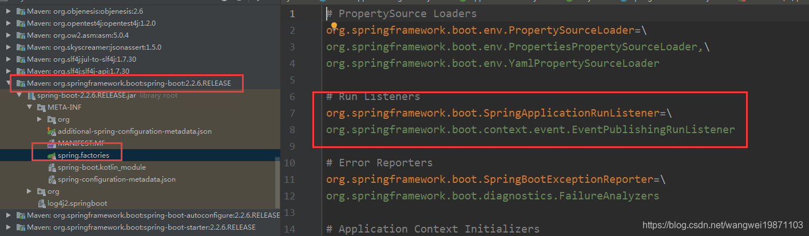
实例化的时候根据参数调用构造方法，我们看下EventPublishingRunListener的构造器：
这里是有参数传进去的，这样他就能获取所有的监听器，然后创建一个事件广播SimpleApplicationEventMulticaster，把监听器都注册进去。
151public EventPublishingRunListener(SpringApplication application, String[] args) {2 this.application = application;3 this.args = args;4 5 // 创建了一个事件广播器6 this.initialMulticaster = new SimpleApplicationEventMulticaster();7 8 // 循环添加到事件广播器中9 for (ApplicationListener<?> listener : application.getListeners()) {10 11 // ---看4-1.1.1步--- initialMulticaster指的就是SimpleApplicationEventMulticaster12 this.initialMulticaster.addApplicationListener(listener);13 // ---end---14 }15}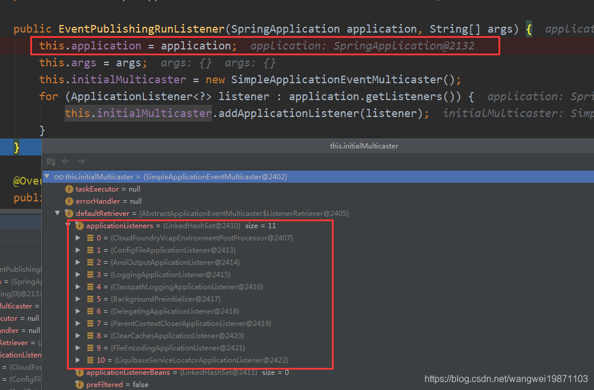
SimpleApplicationEventMulticaster#addApplicationListener
注册的时候有个细节，他会把代理类型的监听器剔除，防止重复通知，还会清除事件和监听器映射的缓存。
181public void addApplicationListener(ApplicationListener<?> listener) {3 synchronized (this.retrievalMutex) {4 // Explicitly remove target for a proxy, if registered already,5 // in order to avoid double invocations of the same listener.6 Object singletonTarget = AopProxyUtils.getSingletonTarget(listener);7 8 // 剔除代理类型的监听器 防止重复通知9 if (singletonTarget instanceof ApplicationListener) {10 this.defaultRetriever.applicationListeners.remove(singletonTarget);11 }12 13 this.defaultRetriever.applicationListeners.add(listener);14 15 // 清除缓存16 this.retrieverCache.clear();17 }18}SpringApplicationRunListeners构造器
会把解析出来的所有的Listener都封装到SpringApplicationRunListeners中。
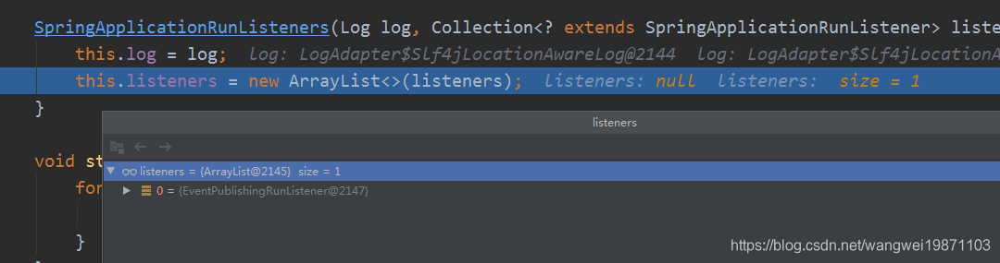
isteners.starting
调用每一个SpringApplicationRunListener的starting，其实就是调用EventPublishingRunListener的，因为现在只有一个。
151void starting() {2 for (SpringApplicationRunListener listener : this.listeners) {3 listener.starting();4 }5}6
7// EventPublishingRunListener 的starting广播启动事件8public void starting() {10 11 // ---看4-2.1步---12 //封装事件源13 this.initialMulticaster.multicastEvent(new ApplicationStartingEvent(this.application, this.args));14 // ---end---15} 这个事件继承JDK里的EventObject的：
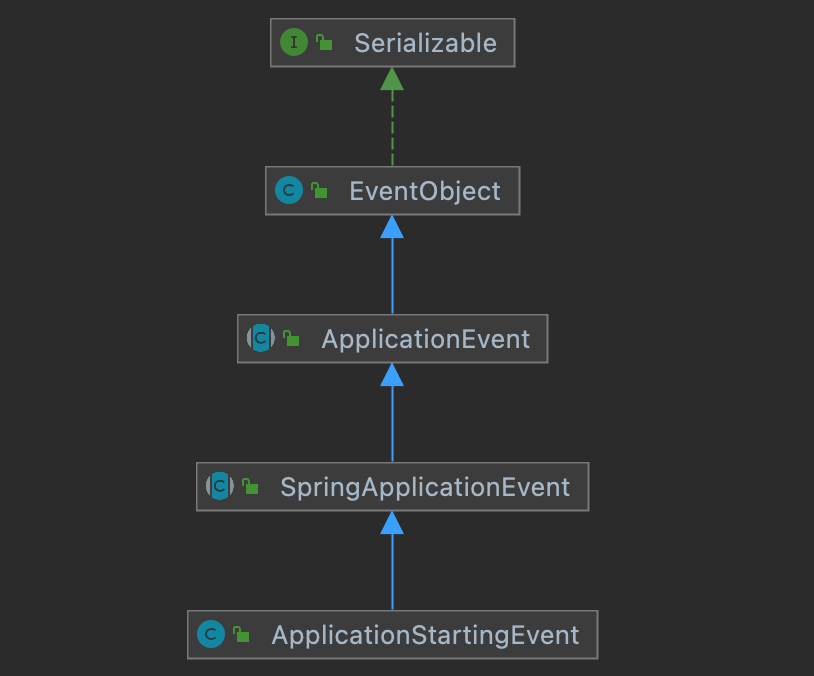
multicastEvent
广播事件，其实这个就是观察者模式，发布订阅模式，或者说事件驱动模式，这里会先进行事件类型解析，解析成ResolvableType类型。
151public void multicastEvent(ApplicationEvent event) {3 // ---看4-2.1.2步---4 //开始广播 //获取ResolvableType实例5 multicastEvent(event, resolveDefaultEventType(event));6 // ---end---7}8
9//resolveDefaultEventType10private ResolvableType resolveDefaultEventType(ApplicationEvent event) {11 // ---看4-2.1.1步---12 // 实例化13 return ResolvableType.forInstance(event);14 // ---end---15}ResolvableType.forInstance
如果是ResolvableTypeProvider类型就会获取类型实例返回，否则会创建一个ResolvableType 对象，将事件类型封装进去。
171public static ResolvableType forInstance(Object instance) {2 Assert.notNull(instance, "Instance must not be null");3 // 判断实例类型是否是 是的直接返回4 if (instance instanceof ResolvableTypeProvider) {5 ResolvableType type = ((ResolvableTypeProvider) instance).getResolvableType();6 if (type != null) {7 return type;8 }9 }10 // 创建一个新的11 return ResolvableType.forClass(instance.getClass());12}13
14public static ResolvableType forClass( Class<?> clazz) {15 //创建一个，把clazz封装进去16 return new ResolvableType(clazz);17}multicastEvent开始广播
获取所有监听器，如果没有执行器就直接调用，有的话会开线程调用，最终都是invokeListener。
291// AbstractApplicationEventMulticaster方法2public void multicastEvent(final ApplicationEvent event, ResolvableType eventType) {3 4 //检查类型，不是就创建一个5 ResolvableType type = (eventType != null ? eventType : resolveDefaultEventType(event));6 7 // 获取执行线程池8 Executor executor = getTaskExecutor();9 10 // ---看4-2.1.3步---11 // 获取所有支持该事件的监听器12 for (ApplicationListener<?> listener : getApplicationListeners(event, type)) {13 // ---end---14 15 // 异步执行16 if (executor != null) {17 18 // ---看4-2.1.6步---19 // 通知监听器20 executor.execute(() -> invokeListener(listener, event));21 // ---end---22 }23 24 // 同步执行25 else {26 invokeListener(listener, event);27 }28 }29}getApplicationListeners
获取所有支持该事件的监听器，现在有个启动事件，但是不一定所有监听器都要支持该事件，如果不支持表示对此事件不关心，那就不需要通知给他了，所以这里就是为了找出支持该事件的监听器集合，找出来之后还会给事件和监听器集合做映射，放入缓存中。
571protected Collection<ApplicationListener<?>> getApplicationListeners(2 ApplicationEvent event, ResolvableType eventType) {3
4 //获取事件源，就是事件是谁触发的5 Object source = event.getSource();6 7 //事件源类型8 Class<?> sourceType = (source != null ? source.getClass() : null);9 10 //封装事件类型和事件源类型11 ListenerCacheKey cacheKey = new ListenerCacheKey(eventType, sourceType);12 13 // ---看4-2.1.4步---14 // 从缓存中获取 //获取监听器检索其15 ListenerRetriever retriever = this.retrieverCache.get(cacheKey);16 // ---end---17 18 if (retriever != null) {19 20 // ---看4-2.1.4步---21 //有就直接返回对应的监听器集合22 return retriever.getApplicationListeners();23 // ---end---24 }25 26 //可以用缓存的情况27 if (this.beanClassLoader == null ||28 (ClassUtils.isCacheSafe(event.getClass(), this.beanClassLoader) &&29 (sourceType == null || ClassUtils.isCacheSafe(sourceType, this.beanClassLoader)))) {30 31 // Fully synchronized building and caching of a ListenerRetriever32 synchronized (this.retrievalMutex) {33 retriever = this.retrieverCache.get(cacheKey);34 //双重检测35 if (retriever != null) {36 return retriever.getApplicationListeners();37 }38 retriever = new ListenerRetriever(true);39 40 // ---看4-2.1.5步---41 //获取支持该事件的监听器集合，并放入retriever中42 Collection<ApplicationListener<?>> listeners =43 retrieveApplicationListeners(eventType, sourceType, retriever);44 // ---end---45 46 //将事件和监听器集合映射47 this.retrieverCache.put(cacheKey, retriever);48 return listeners;49 }50 }51 else {52 53 //不用缓存的情况，每次都取一遍54 // No ListenerRetriever caching -> no synchronization necessary55 return retrieveApplicationListeners(eventType, sourceType, null);56 }57}ListenerRetriever
这个其实就是存监听器的，但是只是对某些事件支持的监听器集合，可以是实例，也可以是bean的名字。
451private class ListenerRetriever {2
3 public final Set<ApplicationListener<?>> applicationListeners = new LinkedHashSet<>();4
5 public final Set<String> applicationListenerBeans = new LinkedHashSet<>();6
7 private final boolean preFiltered;8
9 public ListenerRetriever(boolean preFiltered) {10 this.preFiltered = preFiltered;11 }12
13 // 直接获取监听器集合14 public Collection<ApplicationListener<?>> getApplicationListeners() {15 //尝试将两个合起来16 List<ApplicationListener<?>> allListeners = new ArrayList<>(17 this.applicationListeners.size() + this.applicationListenerBeans.size());18 19 allListeners.addAll(this.applicationListeners);20 if (!this.applicationListenerBeans.isEmpty()) {21 BeanFactory beanFactory = getBeanFactory();22 23 //实例化bean并加入进去24 for (String listenerBeanName : this.applicationListenerBeans) {25 try {26 //直接获取27 ApplicationListener<?> listener = beanFactory.getBean(listenerBeanName, ApplicationListener.class);28 if (this.preFiltered || !allListeners.contains(listener)) {29 30 //去重后添加进去31 allListeners.add(listener);32 }33 }34 catch (NoSuchBeanDefinitionException ex) {35 // Singleton listener instance (without backing bean definition) disappeared -36 // probably in the middle of the destruction phase37 }38 }39 }40 if (!this.preFiltered || !this.applicationListenerBeans.isEmpty()) {41 AnnotationAwareOrderComparator.sort(allListeners);42 }43 return allListeners;44 }45}retrieveApplicationListeners
这个就是根据监听器是否支持该事件，进行监听器的筛选，最后把支持的监听器集合返回。其实还会涉及到bean名字的集合，支持该事件的会直接获取，然后放进不同的集合里，最后都会讲所有支持的监听器全部返回。这里会把监听器集合也放在ListenerRetriever里，以便于做事件类型和监听器集合的映射缓存。
791private Collection<ApplicationListener<?>> retrieveApplicationListeners(2 ResolvableType eventType, Class<?> sourceType, ListenerRetriever retriever) {3
4 List<ApplicationListener<?>> allListeners = new ArrayList<>();5 Set<ApplicationListener<?>> listeners;6 Set<String> listenerBeans;7 8 //获取SimpleApplicationEventMulticaster添加监听器的时候就加入进去的监听器集合9 synchronized (this.retrievalMutex) {10 listeners = new LinkedHashSet<>(this.defaultRetriever.applicationListeners);11 listenerBeans = new LinkedHashSet<>(this.defaultRetriever.applicationListenerBeans);12 }13
14
15 //遍历所有的监听器，看监听器是否支持该事件16 for (ApplicationListener<?> listener : listeners) {17 18 // ---看4-2.1.5.1步---19 // 判断是否支持当前监听器20 if (supportsEvent(listener, eventType, sourceType)) {21 // ---end---22 23 if (retriever != null) {24 //支持就添加进去25 retriever.applicationListeners.add(listener);26 }27 //也添加到allListeners里28 allListeners.add(listener);29 }30 }31
32
33 //如果有监听的bean的话，也要加进去34 if (!listenerBeans.isEmpty()) {35 ConfigurableBeanFactory beanFactory = getBeanFactory();36 for (String listenerBeanName : listenerBeans) {37 try {38 //支持该事件的直接获取39 if (supportsEvent(beanFactory, listenerBeanName, eventType)) {40 ApplicationListener<?> listener =41 beanFactory.getBean(listenerBeanName, ApplicationListener.class);42 if (!allListeners.contains(listener) && supportsEvent(listener, eventType, sourceType)) {43 if (retriever != null) {44 if (beanFactory.isSingleton(listenerBeanName)) {45 retriever.applicationListeners.add(listener);46 }47 else {48 retriever.applicationListenerBeans.add(listenerBeanName);49 }50 }51 allListeners.add(listener);52 }53 }54 55 //不支持就删除56 else {57
58 Object listener = beanFactory.getSingleton(listenerBeanName);59 if (retriever != null) {60 retriever.applicationListeners.remove(listener);61 }62 allListeners.remove(listener);63 }64 }65 catch (NoSuchBeanDefinitionException ex) {66
67 }68 }69 }70
71 AnnotationAwareOrderComparator.sort(allListeners);72 if (retriever != null && retriever.applicationListenerBeans.isEmpty()) {73 retriever.applicationListeners.clear();74 75 //添加一遍，防止漏了76 retriever.applicationListeners.addAll(allListeners);77 }78 return allListeners;79}supportsEvent
是否支持该事件，如果是GenericApplicationListener类型的话，就可以直接判断，不是的话要用适配器适配一下，适配器模式，接口不一致的时候，可以用这个适配，这里用的是对象适配器，持有要适配的对象。是否支持就是看事件类型和事件源类型是否支持了。
201protected boolean supportsEvent(ApplicationListener<?> listener, 2 ResolvableType eventType, Class<?> sourceType) {3
4 // 是GenericApplicationListener类型 之间判断 不是的话包装成此类型5 GenericApplicationListener smartListener = (listener instanceof GenericApplicationListener ?6 (GenericApplicationListener) listener : new GenericApplicationListenerAdapter(listener));7 8 // supportsEventType 是否支持该事件 supportsSourceType 是否支持事件源类型9 return (smartListener.supportsEventType(eventType) && smartListener.supportsSourceType(sourceType));10 // ---end---11}12
13// new GenericApplicationListenerAdapter(listener))14// 保存监听器，然后解析出监听那种事件类型，便于后面判断。15public GenericApplicationListenerAdapter(ApplicationListener<?> delegate) {16 Assert.notNull(delegate, "Delegate listener must not be null");17 this.delegate = (ApplicationListener<ApplicationEvent>) delegate;18 //解析出对哪种ApplicationEvent事件支持的ResolvableType对象19 this.declaredEventType = resolveDeclaredEventType(this.delegate);20}supportsEventType：是否支持该类型事件，如果发现被适配对象是SmartApplicationListener类型的，就直接调用他的supportsEventType方法，否则就判断事件类型是不是监听器支持的事件类型或者是事件子类类型
declaredEventType。
171("unchecked")3public boolean supportsEventType(ResolvableType eventType) {4 if (this.delegate instanceof SmartApplicationListener) {5 Class<? extends ApplicationEvent> eventClass = (Class<? extends ApplicationEvent>) eventType.resolve();6 return (eventClass != null && ((SmartApplicationListener) this.delegate).supportsEventType(eventClass));7 }8 else {9 return (this.declaredEventType == null || this.declaredEventType.isAssignableFrom(eventType));10 }11}12
13//封装成ResolvableType对象14public boolean supportsEventType(Class<? extends ApplicationEvent> eventType) {16 return supportsEventType(ResolvableType.forClass(eventType));17}supportsSourceType：是否支持该事件源类型，如果被适配监听器不是
SmartApplicationListener类型，直接支持，否则就调用他的supportsSourceType来判断。
51public boolean supportsSourceType( Class<?> sourceType) {3 return !(this.delegate instanceof SmartApplicationListener) ||4 ((SmartApplicationListener) this.delegate).supportsSourceType(sourceType);5}SmartApplicationListener
271public interface SmartApplicationListener extends ApplicationListener<ApplicationEvent>, Ordered {2
3 /**4 * Determine whether this listener actually supports the given event type.5 * @param eventType the event type (never {@code null})6 */7 boolean supportsEventType(Class<? extends ApplicationEvent> eventType);8
9 /**10 * Determine whether this listener actually supports the given source type.11 * <p>The default implementation always returns {@code true}.12 * @param sourceType the source type, or {@code null} if no source13 */14 default boolean supportsSourceType( Class<?> sourceType) {15 return true;16 }17
18 /**19 * Determine this listener's order in a set of listeners for the same event.20 * <p>The default implementation returns {@link #LOWEST_PRECEDENCE}.21 */22 23 default int getOrder() {24 return LOWEST_PRECEDENCE;25 }26
27}GenericApplicationListener
271public interface GenericApplicationListener extends ApplicationListener<ApplicationEvent>, Ordered {2
3 /**4 * Determine whether this listener actually supports the given event type.5 * @param eventType the event type (never {@code null})6 */7 boolean supportsEventType(ResolvableType eventType);8
9 /**10 * Determine whether this listener actually supports the given source type.11 * <p>The default implementation always returns {@code true}.12 * @param sourceType the source type, or {@code null} if no source13 */14 default boolean supportsSourceType( Class<?> sourceType) {15 return true;16 }17
18 /**19 * Determine this listener's order in a set of listeners for the same event.20 * <p>The default implementation returns {@link #LOWEST_PRECEDENCE}.21 */22 23 default int getOrder() {24 return LOWEST_PRECEDENCE;25 }26
27}SmartApplicationListener与GenericApplicationListener区别
他们的区别就是supportsEventType方法的参数，一个是直接的事件类型，一个是ResolvableType，为什么要在封装一层呢，其实是为了封装一些类型相关的方法，可以方法使用，具体你可以去看ResolvableType里面的方法就知道了。
invokeListener
SimpleApplicationEventMulticaster的invokeListener通知监听器，将支持该事件的监听器集合获取后遍历通知。
171protected void invokeListener(ApplicationListener<?> listener, ApplicationEvent event) {2 ErrorHandler errorHandler = getErrorHandler();3 4 //有错误处理的，可以捕获异常5 if (errorHandler != null) {6 try {7 doInvokeListener(listener, event);8 }9 catch (Throwable err) {10 errorHandler.handleError(err);11 }12 }13 else {14 //一般的15 doInvokeListener(listener, event);16 }17}doInvokeListener：执行方法，其实就是调用监听器的的
onApplicationEvent啦，传入事件event。
181private void doInvokeListener(ApplicationListener listener, ApplicationEvent event) {2 try {3 listener.onApplicationEvent(event);4 } catch (ClassCastException ex) {5 String msg = ex.getMessage();6 if (msg == null || matchesClassCastMessage(msg, event.getClass())) {7 // Possibly a lambda-defined listener which we could not resolve the generic event type for8 // -> let's suppress the exception and just log a debug message.9 Log logger = LogFactory.getLog(getClass());10 if (logger.isTraceEnabled()) {11 logger.trace("Non-matching event type for listener: " + listener, ex);12 }13 }14 else {15 throw ex;16 }17 }18 }比如LoggingApplicationListener#onApplicationEvent
211// 根据不同的类型 做出不同的响应2public void onApplicationEvent(ApplicationEvent event) {4 if (event instanceof ApplicationStartingEvent) {5 onApplicationStartingEvent((ApplicationStartingEvent) event);6 }7 else if (event instanceof ApplicationEnvironmentPreparedEvent) {8 onApplicationEnvironmentPreparedEvent(9 (ApplicationEnvironmentPreparedEvent) event);10 }11 else if (event instanceof ApplicationPreparedEvent) {12 onApplicationPreparedEvent((ApplicationPreparedEvent) event);13 }14 else if (event instanceof ContextClosedEvent && ((ContextClosedEvent) event)15 .getApplicationContext().getParent() == null) {16 onContextClosedEvent();17 }18 else if (event instanceof ApplicationFailedEvent) {19 onApplicationFailedEvent();20 }21} 至此，启动广播完成了，监听器们收到了ApplicationStartingEvent事件，然后进行处理，目前这些监听器会支持该事件：
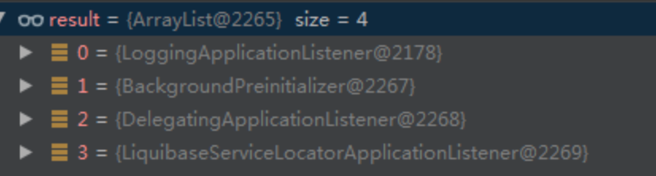
prepareEnvironment
SpringApplication的prepareEnvironment准备环境：
321private ConfigurableEnvironment prepareEnvironment(SpringApplicationRunListeners listeners,2 ApplicationArguments applicationArguments) {3 4 // ---看4-3.1步---5 //获取环境6 // Create and configure the environment7 ConfigurableEnvironment environment = getOrCreateEnvironment();8 // ---end---9
10 // ---看4-3.2步---11 configureEnvironment(environment, applicationArguments.getSourceArgs());12 // ---end---13 14 //ConfigurationPropertySources附加到环境一次15 ConfigurationPropertySources.attach(environment);16 17 //广播环境准备好的事件18 listeners.environmentPrepared(environment);19 20 //绑定到SpringApplication21 bindToSpringApplication(environment);22 23 //推断环境，如果不是这个类型，要进行切换24 if (!this.isCustomEnvironment) {25 environment = new EnvironmentConverter(getClassLoader()).convertEnvironmentIfNecessary(environment,26 deduceEnvironmentClass());27 }28 29 //又附加一次，主要是为了放最前面30 ConfigurationPropertySources.attach(environment);31 return environment;32 }getOrCreateEnvironment
根据前面的webApplicationType判断要创建哪种环境。
141private ConfigurableEnvironment getOrCreateEnvironment() {2 if (this.environment != null) {3 return this.environment;4 }5 6 switch (this.webApplicationType) {7 case SERVLET:8 return new StandardServletEnvironment();9 case REACTIVE:10 return new StandardReactiveWebEnvironment();11 default:12 return new StandardEnvironment();13 }14}configureEnvironment
配置环境，这里主要是配置了很多的类型转换器和格式转换器，另外两个跟换进属性相关。
171protected void configureEnvironment(ConfigurableEnvironment environment, String[] args) {2 if (this.addConversionService) {3 // ---看4-3.2.1步---4 //配置转换器5 ConversionService conversionService = ApplicationConversionService.getSharedInstance();6 // ---end---7
8 //设置到环境中去9 environment.setConversionService((ConfigurableConversionService) conversionService);10 }11
12 //配置默认属性13 configurePropertySources(environment, args);14
15 //配置代码添加的环境16 configureProfiles(environment, args);17}ApplicationConversionService.getSharedInstance
配置转换器，这个里面有配置很多转换器。

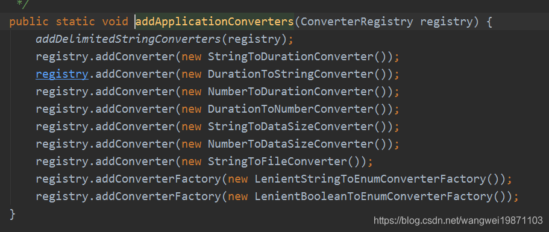
SpringApplication的printBanner打印banner
内部支持 "gif", "jpg", "png"，"txt"：
771private Banner printBanner(ConfigurableEnvironment environment) {2 if (this.bannerMode == Banner.Mode.OFF) {3 return null;4 }5 ResourceLoader resourceLoader = (this.resourceLoader != null)6 ? this.resourceLoader : new DefaultResourceLoader(getClassLoader());7 SpringApplicationBannerPrinter bannerPrinter = new SpringApplicationBannerPrinter(8 resourceLoader, this.banner);9 if (this.bannerMode == Mode.LOG) {10 // 打印11 return bannerPrinter.print(environment, this.mainApplicationClass, logger);12 }13 return bannerPrinter.print(environment, this.mainApplicationClass, System.out);14}15
16// 打印17public Banner print(Environment environment, Class<?> sourceClass, Log logger) {18 // 获取打印19 Banner banner = getBanner(environment);20 try {21 logger.info(createStringFromBanner(banner, environment, sourceClass));22 }23 catch (UnsupportedEncodingException ex) {24 logger.warn("Failed to create String for banner", ex);25 }26 return new PrintedBanner(banner, sourceClass);27}28
29private Banner getBanner(Environment environment) {30 Banners banners = new Banners();31 // 获取图片类型的Banner32 banners.addIfNotNull(getImageBanner(environment));33 // 获取文本类型的Banner34 banners.addIfNotNull(getTextBanner(environment));35 if (banners.hasAtLeastOneBanner()) {36 return banners;37 }38 if (this.fallbackBanner != null) {39 return this.fallbackBanner;40 }41 return DEFAULT_BANNER;42}43
44// 获取图片类型的Banner45private Banner getImageBanner(Environment environment) {46 // 从文件中获取SpringBanner信息47 //BANNER_IMAGE_LOCATION_PROPERTY = "spring.banner.image.location";48 String location = environment.getProperty(BANNER_IMAGE_LOCATION_PROPERTY);49 if (StringUtils.hasLength(location)) {50 Resource resource = this.resourceLoader.getResource(location);51 return resource.exists() ? new ImageBanner(resource) : null;52 }53 54 // 默认支持3种类型55 // static final String[] IMAGE_EXTENSION = { "gif", "jpg", "png" };56 for (String ext : IMAGE_EXTENSION) {57 Resource resource = this.resourceLoader.getResource("banner." + ext);58 if (resource.exists()) {59 return new ImageBanner(resource);60 }61 }62 return null;63}64
65// 获取文本类型Banner66private Banner getTextBanner(Environment environment) {67 // BANNER_LOCATION_PROPERTY = "spring.banner.location";68 String location = environment.getProperty(BANNER_LOCATION_PROPERTY,69 DEFAULT_BANNER_LOCATION);70 Resource resource = this.resourceLoader.getResource(location);71 if (resource.exists()) {72 return new ResourceBanner(resource);73 }74 return null;75}76
77// 文本类型最终读的是resource/banner.text文件createApplicationContext
创建上下文，根据类型创建上下文，默认全是注解。
261protected ConfigurableApplicationContext createApplicationContext() {2 Class<?> contextClass = this.applicationContextClass;3 4 if (contextClass == null) {5 try {6 switch (this.webApplicationType) {7 case SERVLET:8 //AnnotationConfigServletWebServerApplicationContext9 contextClass = Class.forName(DEFAULT_SERVLET_WEB_CONTEXT_CLASS);10 break;11 case REACTIVE:12 //AnnotationConfigReactiveWebServerApplicationContext13 contextClass = Class.forName(DEFAULT_REACTIVE_WEB_CONTEXT_CLASS);14 break;15 default: 16 //AnnotationConfigApplicationContext17 contextClass = Class.forName(DEFAULT_CONTEXT_CLASS);18 }19 }20 catch (ClassNotFoundException ex) {21 throw new IllegalStateException(22 "Unable create a default ApplicationContext, please specify an ApplicationContextClass", ex);23 }24 }25 return (ConfigurableApplicationContext) BeanUtils.instantiateClass(contextClass);26}prepareContext准备上下文
这里面有干了很多事，他会将最前面获得的初始化器都初始化，然后广播上下文准备好事件，然后这里居然还设置了不能覆盖同名bean定义，这样就避免了用户去捣乱了。最后会把启动类的注册到bean定义里，然后广播上下文加载完成事件。
551private void prepareContext(ConfigurableApplicationContext context, 2 ConfigurableEnvironment environment,3 SpringApplicationRunListeners listeners, 4 ApplicationArguments applicationArguments, 5 Banner printedBanner) {6 7 //配置环境8 context.setEnvironment(environment);9 10 // ---看4-6.1步---11 //一些设置处理12 postProcessApplicationContext(context);13 // ---end---14
15 // ---看4-6.2步---16 //监听器进行初始化17 applyInitializers(context);18 // ---end--- 19 20 //广播上下文准备好的事件ApplicationContextInitializedEvent21 listeners.contextPrepared(context);22 23 //控制台打启动信息24 if (this.logStartupInfo) {25 logStartupInfo(context.getParent() == null);26 logStartupProfileInfo(context);27 }28 29 // Add boot specific singleton beans30 ConfigurableListableBeanFactory beanFactory = context.getBeanFactory();31 beanFactory.registerSingleton("springApplicationArguments", applicationArguments);32 if (printedBanner != null) {33 beanFactory.registerSingleton("springBootBanner", printedBanner);34 }35 if (beanFactory instanceof DefaultListableBeanFactory) {36 //不允许同名的bean定义的覆盖37 ((DefaultListableBeanFactory) beanFactory)38 .setAllowBeanDefinitionOverriding(this.allowBeanDefinitionOverriding);39 }40 if (this.lazyInitialization) {41 context.addBeanFactoryPostProcessor(new LazyInitializationBeanFactoryPostProcessor());42 }43 //获取启动源集合，就是传给SpringApplication的参数类44 // Load the sources45 Set<Object> sources = getAllSources();46 Assert.notEmpty(sources, "Sources must not be empty");47 48 // ---看4-6.3步---49 //注册启动类的bean定义50 load(context, sources.toArray(new Object[0]));51 // ---end---52 53 //广播上下文加载完成事件ApplicationPreparedEvent54 listeners.contextLoaded(context);55}postProcessApplicationContext
就是提前去注册bean名字生成器，资源加载器，还有前面创建的转换器也要放进来。
181protected void postProcessApplicationContext(ConfigurableApplicationContext context) {2 if (this.beanNameGenerator != null) {3 context.getBeanFactory().registerSingleton(AnnotationConfigUtils.CONFIGURATION_BEAN_NAME_GENERATOR,4 this.beanNameGenerator);5 }6 if (this.resourceLoader != null) {7 if (context instanceof GenericApplicationContext) {8 ((GenericApplicationContext) context).setResourceLoader(this.resourceLoader);9 }10 if (context instanceof DefaultResourceLoader) {11 ((DefaultResourceLoader) context).setClassLoader(this.resourceLoader.getClassLoader());12 }13 }14 //添加转换器15 if (this.addConversionService) {16 context.getBeanFactory().setConversionService(ApplicationConversionService.getSharedInstance());17 }18}applyInitializers
获取最开始创建的初始化器，遍历每一个初始化器，进行初始化。
131 protected void applyInitializers(ConfigurableApplicationContext context) {2 for (ApplicationContextInitializer initializer : getInitializers()) {3 Class<?> requiredType = GenericTypeResolver.resolveTypeArgument(initializer.getClass(),4 //获取ApplicationContextInitializer接口的泛型类型5 ApplicationContextInitializer.class);6 7 //context不是requiredType类型是不行的8 Assert.isInstanceOf(requiredType, context, "Unable to call initializer.");9 10 //初始化11 initializer.initialize(context);12 }13 }load
创建bean定义加载器，进行bean定义的加载，就是把sources注册到bean定义里。
251protected void load(ApplicationContext context, Object[] sources) {2 if (logger.isDebugEnabled()) {3 logger.debug("Loading source " + StringUtils.arrayToCommaDelimitedString(sources));4 }5 BeanDefinitionLoader loader = createBeanDefinitionLoader(getBeanDefinitionRegistry(context), sources);6 if (this.beanNameGenerator != null) {7 loader.setBeanNameGenerator(this.beanNameGenerator);8 }9 if (this.resourceLoader != null) {10 loader.setResourceLoader(this.resourceLoader);11 }12 if (this.environment != null) {13 loader.setEnvironment(this.environment);14 }15 loader.load();16}17
18//遍历每一个加载19int load() {20 int count = 0;21 for (Object source : this.sources) {22 count += load(source);23 }24 return count;25} 根据不同类型加载，最后都是registerBean：
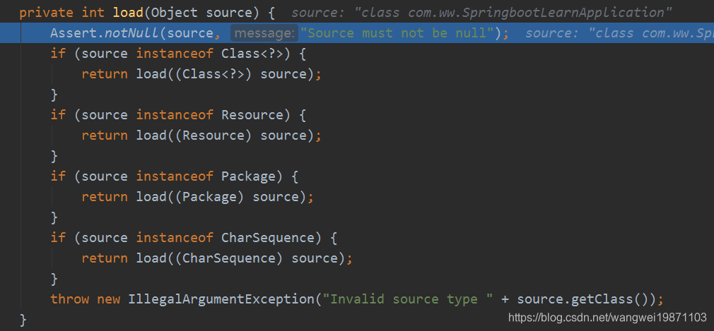
refreshContext
刷新上下文，除了刷新外，还注册了一个钩子。
111private void refreshContext(ConfigurableApplicationContext context) {2 refresh(context);3 if (this.registerShutdownHook) {4 try {5 context.registerShutdownHook();6 }7 catch (AccessControlException ex) {8 // Not allowed in some environments.9 }10 }11}refresh
调用当前上下文AbstractApplicationContext类型的refresh，当前上下文是ServletWebServerApplicationContext类型的，所以会调用到他的refresh。
41protected void refresh(ApplicationContext applicationContext) {2 Assert.isInstanceOf(AbstractApplicationContext.class, applicationContext);3 ((AbstractApplicationContext) applicationContext).refresh();4}ServletWebServerApplicationContext的refresh：然后调用父类的
refresh。
101public final void refresh() throws BeansException, IllegalStateException {3 try {4 super.refresh();5 }6 catch (RuntimeException ex) {7 stopAndReleaseWebServer();8 throw ex;9 }10} 里面就是spring的refresh方法，进行初始化，就不讲了，可以看我写的spring源码文章，其实内部干了不少事情，后面会讲，毕竟前面那么多初始化器初始化了，肯定会对后面spring初始化有所作用。
看看钩子方法，其实就是注册一个关闭线程：
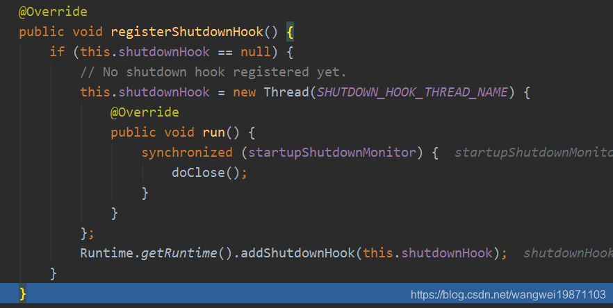
刷新完成后基本没啥事了，就进行启动完成事件通知，还有一些的ApplicationRunner和CommandLineRunner类型的bean要处理，一般是没有的：
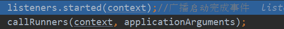
最后再通知一个运行事件初始化就完成了：
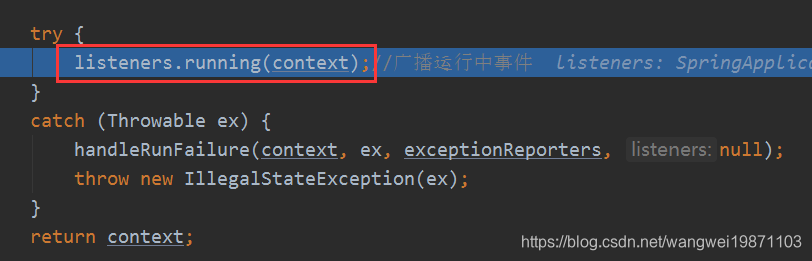